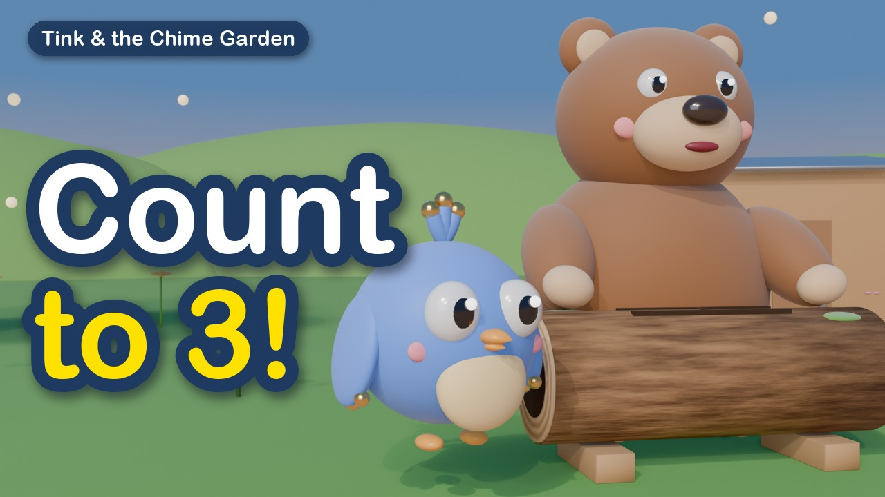

Tink & the Chime Garden
An original animated show for little ones about music, feelings and friendship.

Meet the friends
Tink is a small round bird whose feathers chime when she moves. Her friends are Boom the bear and his log drum, Pipa the mouse and her whistle, and Gus, a sleepy frog with a very important croak. In every episode they sing, move, play Seek & Find, and learn something kind together: counting, listening, sharing, saying sorry, being brave.
New episodes
A new episode comes out every day at 10:00 AM Mountain Time on our YouTube channel.
How the show is made
Episodes are created by an independent creator with the help of AI tools: scripts are written with Claude (Anthropic), voices and songs are made with ElevenLabs, and the animation is rendered using Python code. Finished episodes are published to our own YouTube channel by a small private tool, Chime Garden Uploader, which uses the YouTube API Services.